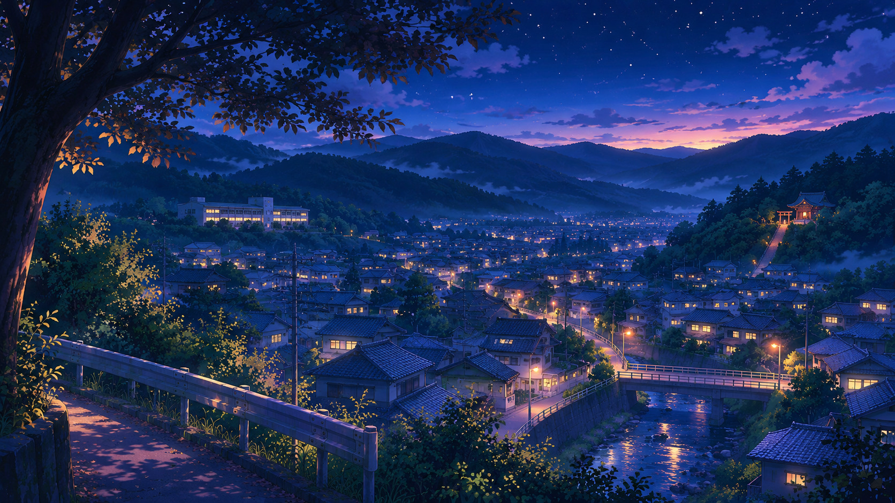
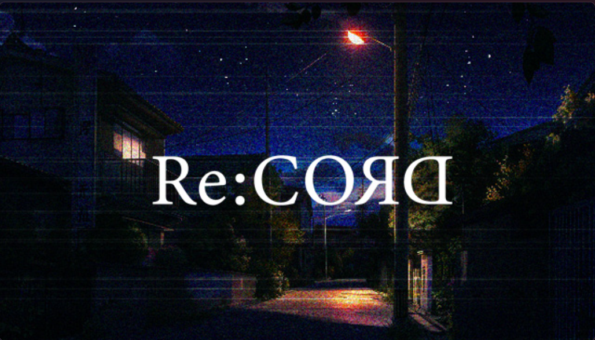
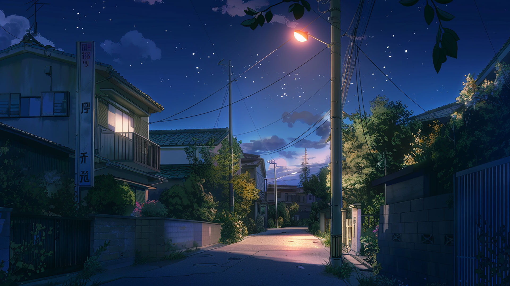
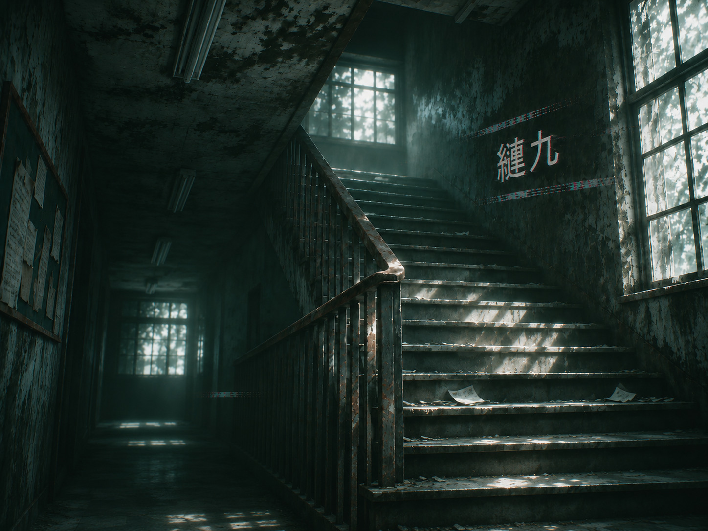
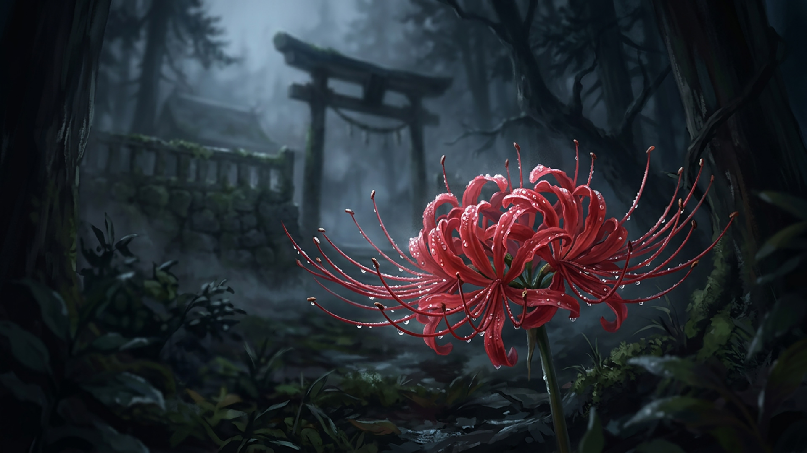
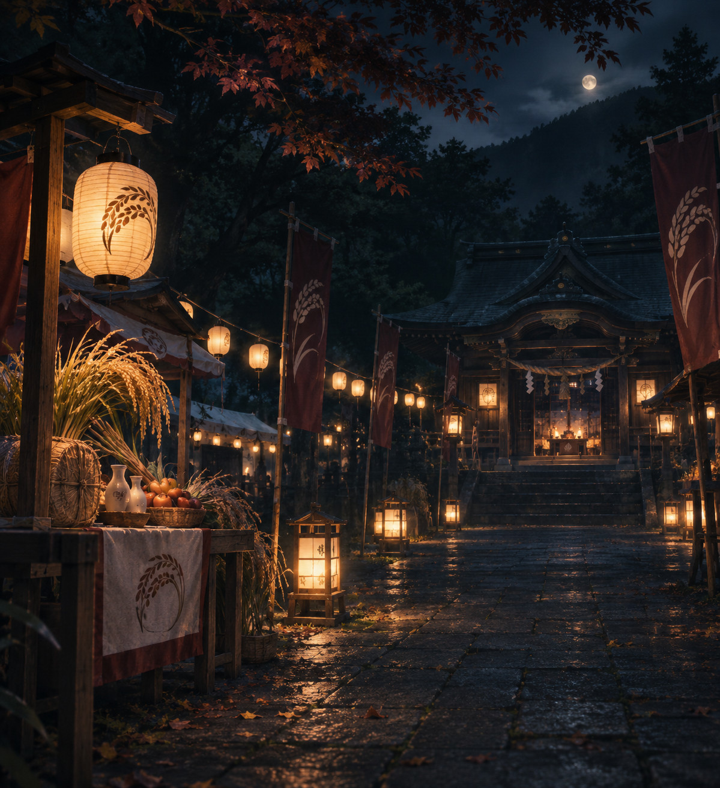
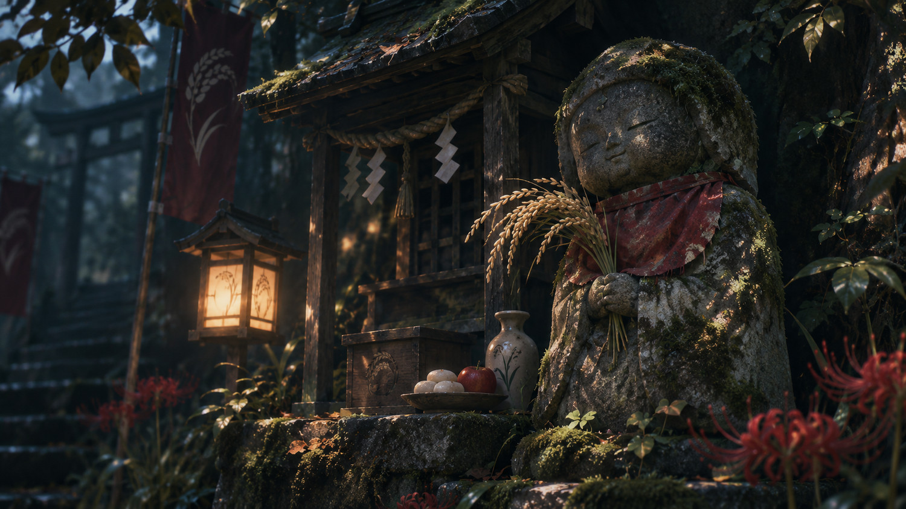
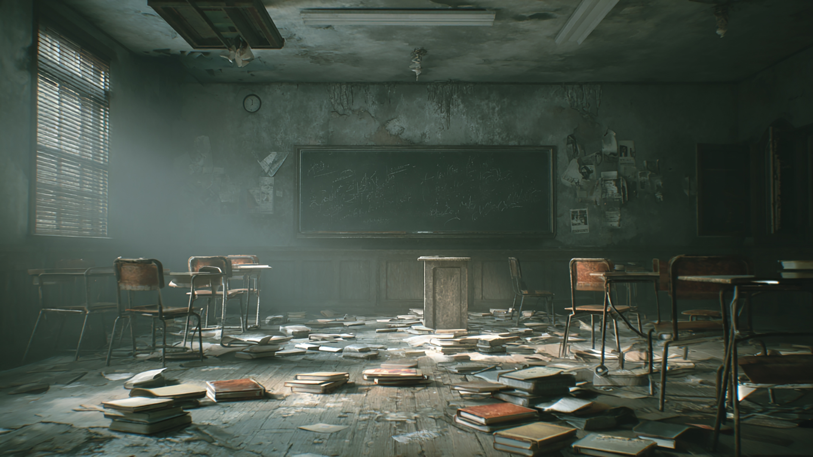
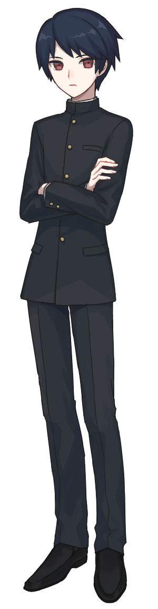
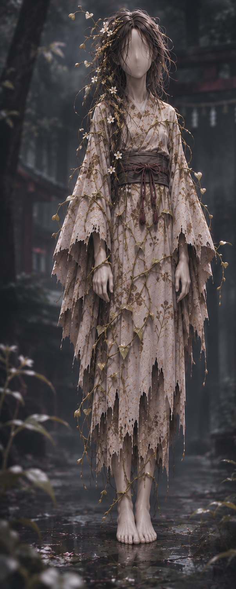

IMAGE AREA / 03world-town.jpg
伊良坂町
いらさかちょう
自然に囲まれた地方の町。古くから伝承や不可解な噂が残る。失踪事件すら、どこか日常に溶け込んでいる。

和風怪異ミステリー × 探索アドベンチャー
リコード
その一枚が、見えない世界を映し出す。
ある日を境に姿を消した、湊人（明人の兄）。
繰り返される失踪事件。
そして、町に古くから伝わる不可解な噂。
何気ない日常の裏側に、もう一つの世界が存在する。
和風怪異ミステリー × 探索アドベンチャーSTORY
山々に囲まれた、ごく普通の町「伊良坂町」。
古くから、この町では不可解な失踪事件が繰り返されていた。
数か月前、湊人（明人の兄）もまた、何の前触れもなく姿を消した。
湊人の行方を追い続ける明人は、ある日、学校で奇妙な噂を耳にする。それは、屋上へと続く階段にまつわる怪談「十三段目」。
さらに、行方不明の湊人に似た人物が目撃されたという。
わずかな手がかりを求め、明人は放課後の校舎へと足を踏み入れる。
その選択が、当たり前だった日常を変えていくとも知らずに。
PROLOGUE / NO. 000
WORLD
変わらない町。
変わってしまった日常。

いらさかちょう
自然に囲まれた地方の町。古くから伝承や不可解な噂が残る。失踪事件すら、どこか日常に溶け込んでいる。

いらさかこうとうがっこう
美原明人と桜庭透子が通う高校。屋上へ続く階段には「十三段目」という怪談が伝わっている。

ほずみじんじゃ
伊良坂町に古くから鎮座する神社。豊かな実りをもたらす神が祀られ、人々に親しまれてきた。

穂澄神社にまつわる、豊作への感謝を捧げる伝統的な祭り。

伊良坂町に伝わる、豊作の神の親しみを込めた呼び名。長い年月を経て、その名の由来を知る人は少なくなっている。
SYSTEM
探し、写し、解き明かす。
記録が、まだ見ぬ真実への手がかりになる。
日常に潜む異変を見つける
校舎や町を探索し、人物との会話や周囲の手がかりから情報を集める。
見えない世界を映し出す
物語の中で手にする古いカメラ。そのレンズを通すことで、普段は見ることのできない景色や手がかりが現れる。
記録を手がかりに進む
撮影によって発見した文字や道具を使い、閉ざされた道や不可解な現象の謎を解き明かしていく。
異形の存在から生き延びる
異界には、人ならざる存在が潜んでいる。時には身を隠し、音を立てず、危険をやり過ごさなければならない。
CAMERA
WHAT WILL THE CAMERA REVEAL?
物語の中で、明人が彼岸の教室で発見する古いカメラ。撮影すると、それまで見えなかった文字が現れた。
目に見えるものだけが、すべてではない。
※サイト用に制作した体験演出です。本編の画面・実際の謎解きではありません。

CHARACTER
失踪をめぐって、交差するそれぞれの想い。

人物番号を選ぶと紹介が切り替わります。
「残されたものには、必ず意味がある。」
冷静な判断力と観察力を持ち、周囲から一歩引いた立場で物事を見つめる高校生。
理不尽な出来事を目の当たりにすると、危険を承知で首を突っ込んでしまう。
数か月前に失踪した湊人（明人の兄）を、わずかな手がかりを頼りに探し続けている。
KAI-I
彼岸に潜む、理を外れた存在たち。記録されている情報は、ほんの一部にすぎない。

顔のない人影のような姿をした怪異。
人間によく似た輪郭を持ちながら、その顔には表情も目鼻も存在しない。
彼岸で遭遇する、基本的な怪異の一種。
※怪異の姿や脅威度は、伊良坂町で確認された記録の一部です。
MOVIE
伊良坂町に潜む異変と、物語の雰囲気を紹介するプロモーション映像。
その一枚が、
見えない世界を映し出す。
WORLD FILE / 01
いらさかちょう
古くからの歴史と、新しい街並みが共存する地方都市。
かつての面影を残す町並みは、都市開発によって少しずつ姿を変えてきた。
人々が当たり前の日常を送る一方で、この町では、時折不可解な失踪事件が報告されている。
WORLD FILE / 02
いらさかこうとうがっこう
伊良坂町に古くからある公立高校。
自由で穏やかな校風のもと、生徒たちは勉強や部活動に励み、それぞれの青春を過ごしている。
そんな何の変哲もない学校には、一部の生徒だけが知る「十三段目」という奇妙な噂が存在する。
WORLD FILE / 03
ほずみじんじゃ
伊良坂町の外れ、小高い丘の上に佇む古い神社。
木々に囲まれた参道を抜けると、四季折々の花々と歴史ある社殿が参拝者を迎える。
かつて豊穣の神への祈りが捧げられたこの場所は、今も静かに町を見守っている。
WORLD FILE / 04
ほうさくさい
毎年秋に開催される、伊良坂町を代表する祭り。
町の中心部にある広場には、地元グルメや特産品の屋台が並び、音楽ライブやステージイベントで賑わう。
その始まりが、豊かな実りへの感謝であったことを知る人は、今では少ない。
WORLD FILE / 05
伊良坂町に古くから伝わる、豊穣の神。
豊かな実りを授ける存在として、かつては町の人々から信仰を集めていたという。
時代の移り変わりとともに、その名を知る者は少なくなった。
今も穂澄神社では、変わらず祈りが捧げられている。